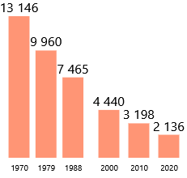
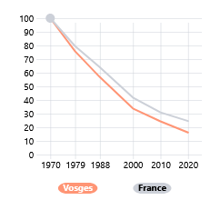
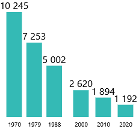
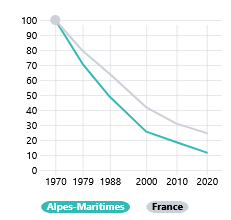
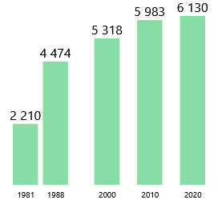
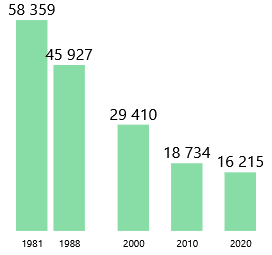

Evolution du nombre d’exploitations
Source: Agreste - Recensements agricoles
En 2020, la France compte 416 400 « exploitations agricoles », 20 % de moins qu’il y a 10 ans, selon les résultats du dernier recensement agricole.
Retourner à l’accueil 
Partager la Viz (Mail) 
Partager la Viz (X)
Partager la Viz (Facebook)
Explorer les données territoriales 
Pendant la navigation, appuyer pour accéder aux autres actions 
Evolution du nombre d’exploitations agricoles en france
Evolution annuelle moyenne du nombre d’exploitations

Depuis, la baisse s’atténue progressivement. Elle s’établit à -2.3 % par an sur la période 2010-2020 (contre -3 % entre 2000 et 2010)
Dans presque toutes les spécialisation, le nombre d’exploitations recule entre 2010 et 2020, excepté pour “Horticulture-maraichage”.
C’est dans les exploitations spécialisées en élevage que la baisse est la plus forte : -30 % (correspondant à -63 500 exploitations), preque les 2/3 de la diminution totale.
L’élevage de bovins est particulièrement concerné : -33 000 exploitations, soit -27 %. Il perd le premier range qu’il détenait en 2010, qui revient à la spécialisation “Grandes cultures”.
Évolution du nombre d’exploitations par spécialisation

Évolution du nombre d’exploitations par spécialisation

Évolution du nombre d’exploitations par spécialisation

Évolution du nombre d’exploitations par spécialisation

Petit Bonus sur la possibilité de scroll horizontalement entre des viz (Utilisation d’html)
Des disparités importantes entre élevage, maraîchage et grandes cultures.
📥 Accéder à la VizLe top 6 des départements en 2020
Il y a 50 ans, c’est la Bretagne et ses proches voisins qui marquaient la tête du classement.
En 2020, la distribution géographique des exploitations est assez proche, bien qu’un peu plus homogène, avec en particulier l’apparition de la Marne, des Pyrénées-Atlantiques et de l’Aveyron parmi les 6 premiers départements.

{kind=link}
Pour en savoir plus sur le sujet :
🐮 Site Agreste 🐮
Pour aller voir d’autres DataViz :
📉 Accueil VizAgreste 📉
Comment se traduisent ces évolution générales dans les territoires ?
Dans une grande façade Ouest, le nombre d’exploitations en Normandie, Bretagne, Pays de la Loire, et Nouvelle-Aquitaine par exemple, se réduit plus fortement …
…que dans les Hauts-de-France, l’Île-de-France ou l’ancienne Champagne-Ardenne.
Tous les territoires sont concernés par la baisse du nombre d’exploitations ecepté la Corse et le Guyane, qui se distinguent par une légère augmentation.
À l’opposé, le nombre d’exploitations baisse le plus fortement dans trois départements de l’Est de la France métropolitaine : Vosges, Territoire-de-Belfort et Alpes-Maritimes.
Dans ces départements se poursuit ces dix dernières années une tendance plus ancienne, avec une diminution plus prononcée qu’en moyenne.
Les Vosges comptent 1 000 exploitations de moins qu’en 2010, évolution plus forte que celle observée entre 2000 et 2010 (-4 % par an contre -3,2 %).
Vosges : un tiers d’exploitations en moins entre 2010 et 2020

📥 Télécharger l’image
Comparaison : indice base 100

📥 Télécharger l’image
Les Alpes-Maritimes détonnent au sein de la région Sud. Beaucoup de petites exploitations de fruits, gérées par des exploitants retraités ou proches de la retraite en 2010, ont disparu.
Alpes-Maritimes : dix fois moins d’exploitations en 50 ans

📥 Télécharger l’image
Comparaison : indice base 100

📥 Télécharger l’image
En Guyane, l’augmentation est continue depuis plusieurs recensements. Il s’agit là d’un cas isolé au sein des départements d’outre-mer, où la tendance est plutôt à la stabilisation du nombre d’exploitations.
Guyane : progression continue

📥 Télécharger l’image
Antilles et la Réunion : vers une stabilisation après une forte réduction

📥 Télécharger l’image
Taux d’évolution du nombre d’exploitations, 2010-2020 (en %)